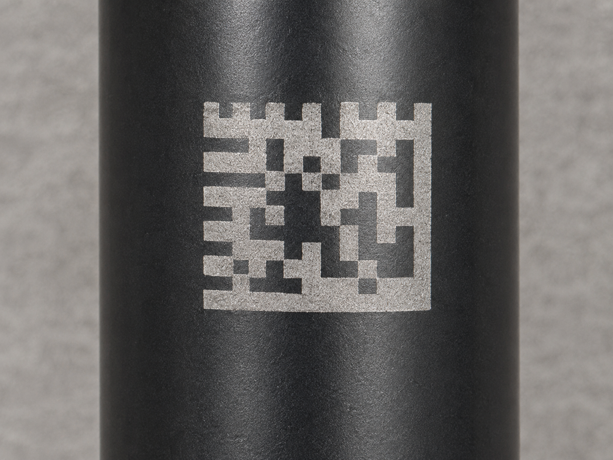
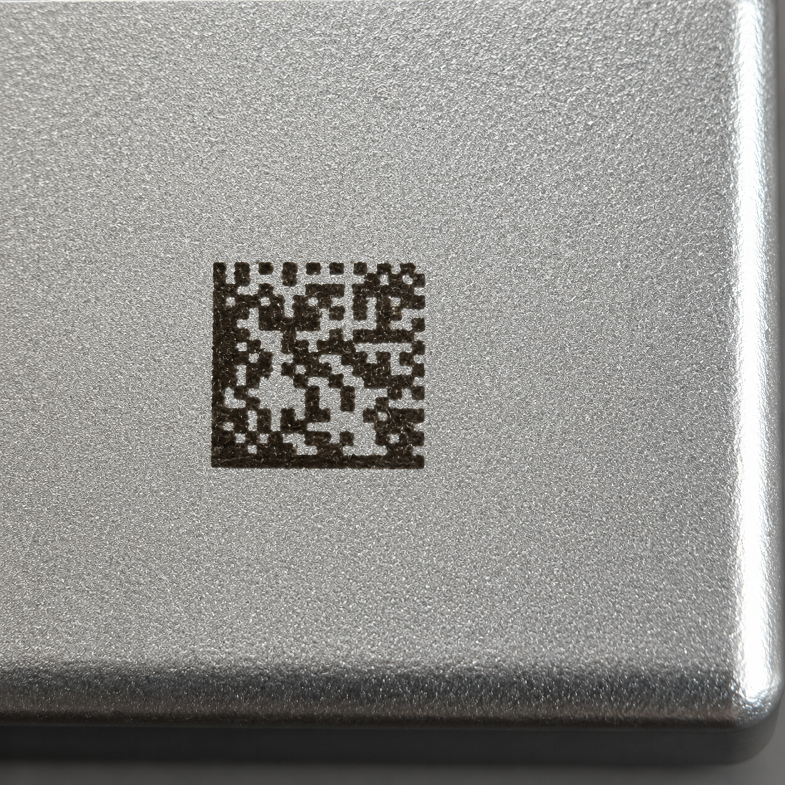
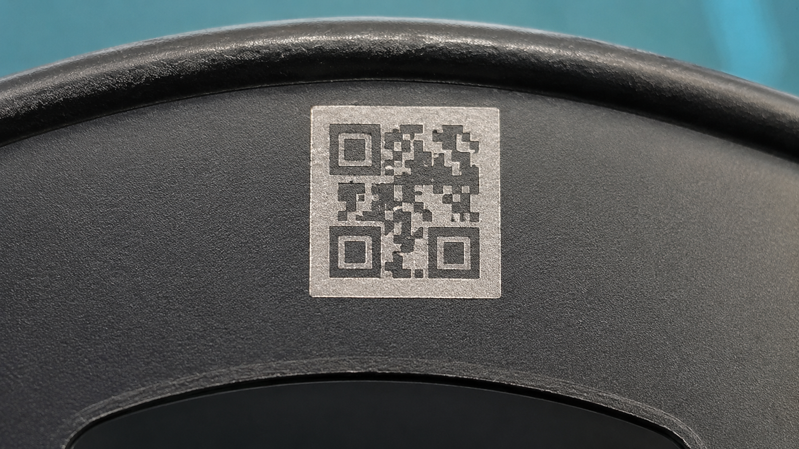

블랙 원통 부품
어두운 표면에서도 마킹이 또렷하게 보이도록 정리한 예시입니다.
날짜, LOT, 시리얼 번호를 규칙에 맞춰 자동 증가 또는 변경할 수 있습니다.
QR Code와 Data Matrix를 제품 크기와 판독 조건에 맞춰 검토합니다.
카메라 판독, 누락 검사, 위치 확인, OK/NG 판정을 함께 구성할 수 있습니다.
사용 중인 데이터 형식과 통신 방식에 따라 생산 시스템 연동을 검토합니다.
아래 예시는 서로 다른 재질과 형상의 부품에 Data Matrix 또는 코드 마킹을 적용한 이미지입니다. 마킹 상태가 또렷하게 보이고 실제 제품에 잘 적용된 예시처럼 보이도록 정리했습니다.
· 예시 1 : 원통형 블랙 부품의 고대비 Data Matrix 마킹
· 예시 2 : 실버 금속 표면의 미세 Data Matrix 마킹
· 예시 3 : 곡면 블랙 부품의 2D 코드 마킹 예시

어두운 표면에서도 마킹이 또렷하게 보이도록 정리한 예시입니다.

미세한 금속 표면 마킹 상태를 보여주는 Data Matrix 예시입니다.

곡면 형상 부품에도 코드가 안정적으로 적용된 느낌을 전달하는 예시입니다.
코드 마킹은 소재, 코드 크기, 판독 카메라, 조명, 생산 속도에 따라 결과가 달라집니다.
| 지원 코드 | QR Code, Data Matrix, 1D Barcode, 문자, 숫자, 로고 |
|---|---|
| 가변 데이터 | 날짜, LOT, 시리얼, 모델명, 순번, 외부 데이터 |
| 적용 소재 | 금속, 플라스틱, 필름, 세라믹, 코팅 부품 등 소재별 레이저 검토 |
| 검사 연동 | 비전 판독, 누락 검사, 위치 검사, OK/NG 판정, 이력 저장 |
| 상담 필요 정보 | 코드 종류, 마킹 크기, 데이터 규칙, 소재, 판독 거리, 생산 속도 |
단순히 코드를 찍는 것에서 끝나지 않고, 어떤 데이터가 들어오고 어떤 기준으로 판독해야 하는지까지 확인해야 안정적인 추적 관리가 가능합니다.
날짜, LOT, 시리얼, 모델명을 직접 입력하거나 외부 파일/시스템에서 불러옵니다.
소재에 맞는 레이저 조건으로 코드와 문자를 제품 표면에 마킹합니다.
카메라로 코드 판독, 누락 여부, 위치, 품질 상태를 확인합니다.
검사 결과와 생산 데이터를 현장 기준에 맞춰 저장하거나 연동합니다.
원통형 표면에 적용된 Data Matrix 예시로, 마킹 식별성과 외관을 함께 보여줍니다.
실버 금속 표면 위에 미세하게 적용된 Data Matrix 마킹 예시입니다.
곡면 또는 하우징 부품에도 안정적으로 코드 마킹이 적용된 예시입니다.
코드 종류와 데이터 규칙을 알려주시면 마킹 방식과 검사 구성을 검토합니다.
공간이 작고 생산 추적용 정보가 많다면 Data Matrix를 검토하는 경우가 많고, 일반 사용자 인식이나 링크 연결이 필요하면 QR을 검토합니다. 최종 선택은 코드 크기와 판독 환경을 보고 판단합니다.
가능합니다. 시작 번호, 자리수, 증가 규칙, 날짜 또는 LOT 조합 방식에 맞춰 가변 데이터 마킹을 검토할 수 있습니다.
가능합니다. 코드 판독, 누락 검사, 위치 검사, OK/NG 판정, 생산 데이터 저장까지 공정 조건에 맞춰 구성할 수 있습니다.